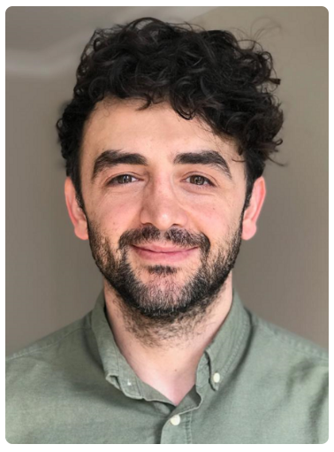

Takımımız
Disiplinlerarası çalışma kültürü ve T-model mühendislik yaklaşımı.

Doç. Dr. Barkan Uğurlu
Akademik Danışman (Makine Mühendisliği)
Robotik, kontrol sistemleri ve biyomekatronik alanlarında uzmanlaşmış, uluslararası deneyime sahip akademisyen. Özyeğin Üniversitesi IEEE RAS ekibinin teknik ve akademik vizyonuna liderlik etmektedir.
Mechanical Engineering Department
Akademik Profil ↗